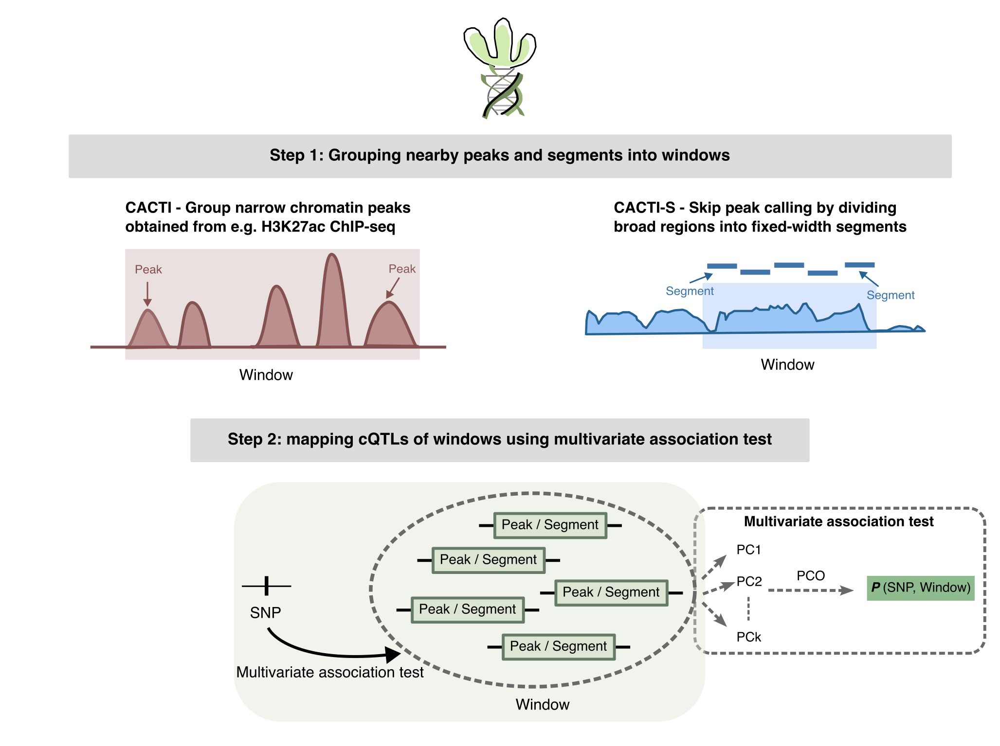

Overview

CACTI implements a powerful method for chromatin QTL mapping that leverages the correlation structure of nearby regulatory elements.
The package offers two main modules:
- CACTI (Peak-based pipeline):
- Suitable for chromatin features with narrow peak signatures (H3k27ac, H3k4me1, ATAC-seq, etc)
- Peak calling should be performed before applying CACTI.
- Takes standard input in standard QTL calling tools: genotype, phenotype (called peaks) and covariates
- A summary statistics-based option is available too
- CACTI-S (Segment-based pipeline):
- Suitable for chromatin features with broad peak signatures (H3K27me3, H3K36me3, etc)
- Skips peak calling, an end-to-end preprocessing workflow to go from raw BAM files to normalized phenotype matrices to QTL mapping.
- Performs segmentation, read counting, QC/filtering, and normalization.
Installation
Use a current R release. CACTI requires R >= 4.1.0; its dependencies may require newer R. Check your version with R.version.string.
if (!requireNamespace("remotes", quietly = TRUE)) {
install.packages("remotes", repos = "https://cloud.r-project.org")
}
if (!requireNamespace("BiocManager", quietly = TRUE)) {
install.packages("BiocManager", repos = "https://cloud.r-project.org")
}
options(repos = BiocManager::repositories())
remotes::install_github("XuanyaoLiuLab/cacti", build_vignettes = FALSE)Required CRAN and Bioconductor packages are installed automatically.
After installation:
Getting Started in 5 Minutes
1) Run CACTI peak-window (genome-wide default)
library(cacti)
file_pheno_meta <- system.file("extdata", "test_cacti_peak_chr5_pheno_meta.bed", package = "cacti")
file_pheno <- system.file("extdata", "test_cacti_peak_chr5_pheno.txt", package = "cacti")
file_cov <- system.file("extdata", "test_cacti_peak_chr5_covariates.txt", package = "cacti")
file_vcf <- system.file("extdata", "test_cacti_peak_chr5_geno.vcf", package = "cacti")
qtl_file <- system.file("extdata", "test_cacti_peak_chr5_matrixqtl_sumstats.txt.gz", package = "cacti")
res <- cacti_peak_window(
window_size = "50kb", # window size to group peaks
file_pheno_meta = file_pheno_meta,
file_pheno = file_pheno,
file_cov = file_cov,
file_vcf = file_vcf,
chr = "All", # default: run all chromosomes in file_pheno_meta
do_fdr = TRUE, # default: add FDR correction
out_prefix = tempfile("cacti_quickstart_")
)
res$file_fdr_out
# Optional summary-stats mode
res_qtl <- cacti_peak_window(
window_size = "50kb",
file_pheno_meta = file_pheno_meta,
file_pheno = file_pheno,
file_cov = file_cov,
qtl_file = qtl_file,
chr = "chr5",
do_fdr = TRUE,
out_prefix = tempfile("cacti_quickstart_qtl_")
)
res_qtl$file_fdr_out2) Run CACTI-S prep (raw BAM to cis-QTL summary stats)
library(cacti)
file_bams <- c(
system.file("extdata", "Sample1.bam", package = "cacti"),
system.file("extdata", "Sample2.bam", package = "cacti"),
system.file("extdata", "Sample3.bam", package = "cacti"),
system.file("extdata", "Sample4.bam", package = "cacti")
)
file_vcf <- system.file("extdata", "test_geno.vcf", package = "cacti")
file_cov <- system.file("extdata", "test_cov.txt", package = "cacti")
res_s <- cacti_s_prep(
file_bams = file_bams,
file_vcf = file_vcf,
file_cov = file_cov,
out_dir = tempdir(),
out_prefix = "cacti_s_quickstart"
)
res_sNotes:
- Input conventions are standard QTL inputs: genotype, phenotype, and covariates with matched sample IDs.
-
cacti_peak_window()also supports summary-statistics mode viaqtl_file/qtl_files.
The bundled synthetic data demonstrate the workflows; they do not evaluate statistical power, calibration, or biological validity.
Optional input-data QC
Three independent functions report diagnostics and warnings without modifying the inputs. They are not run automatically by the CACTI or CACTI-S workflows.
| Function | Input format | Diagnostics |
|---|---|---|
cacti_qc_samples() |
Numeric feature-by-sample matrix; specify input_type = "raw_counts" or "normalized". |
Missing/non-finite values; for raw counts, total counts for the sample and proportion of zero measurements. |
cacti_qc_features() |
Numeric feature-by-sample matrix; specify the input type. | Missing/non-finite values and variance; for raw counts, mean counts, detection frequency, and proportion of zero measurements. |
cacti_qc_library() |
Named character vector of BAM paths, with sample/library IDs as names. No BAM index is required. | Read depth, mapping quality, usable reads, duplicate flags, mean base quality, and proportion of bases with Q >= 30. |
For both matrix functions, samples are columns, with sample IDs as column names; features are rows, with feature IDs as row names. Supply numeric R matrices or numeric data frames, not file paths. Both functions return the number of samples (n_samples), the number of features (n_features), a descriptive summary table, and warnings. Count totals, zero proportions, detection proportions, and variance use the observed finite measurements; missing and non-finite values are reported separately. Metrics requiring observations are NA when none are available. Count totals sum over the supplied features, not all sequenced reads; count-based diagnostics do not apply to normalized phenotypes.
phenotype <- as.matrix(read.delim(
system.file("extdata", "test_cacti_peak_chr5_pheno.txt", package = "cacti"),
row.names = 1, check.names = FALSE
))
sample_qc <- cacti_qc_samples(phenotype, input_type = "normalized")
feature_qc <- cacti_qc_features(phenotype, input_type = "normalized")
c(n_samples = sample_qc$n_samples, n_features = feature_qc$n_features)
sample_qc$summary
head(feature_qc$summary)
bam_qc <- cacti_qc_library(
setNames(file_bams, sub("\\.bam$", "", basename(file_bams)))
)
bam_qc$summaryBAM metrics count primary read records, not paired-end fragments, and describe only the records present in the supplied files. Removed reads cannot be recovered. Base quality describes confidence in nucleotide calls, whereas MAPQ describes alignment confidence. mean_base_quality is the mean Phred score across bases with stored quality scores; prop_bases_q30 is the proportion of these bases with Q >= 30. These metrics use all primary records, independently of the usable-read filters. The report also includes bases_with_quality and reads_without_base_quality; missing qualities are excluded, not treated as zero, and both quality metrics are NA when no scores are available.
Set duplicate_flags = "marked" only when duplicate marking is known to have been performed; otherwise the duplicate proportion is reported as unavailable. QC warning criteria are configurable, and these diagnostics do not establish statistical power or false-positive control. See the vignettes and function help for examples and metric definitions.
Documentation
Vignettes
See the full documentation and vignettes for -
CACTI Peak-Window Pipeline
CACTI-S Pipeline
The installation above skips vignette building; use the online documentation. To also install local vignettes, first install Pandoc, then run:
options(repos = BiocManager::repositories())
remotes::install_github(
"XuanyaoLiuLab/cacti",
dependencies = TRUE,
build_vignettes = TRUE,
force = TRUE
)After installation with vignettes:
Citation
The CACTI method was developed by Lili Wang https://x.com/liliw_wang.
If you use the CACTI method, please cite:
Wang, L., & Liu, X. (2025). Improved chromatin QTL mapping with CACTI. bioRxiv, 2025-06.